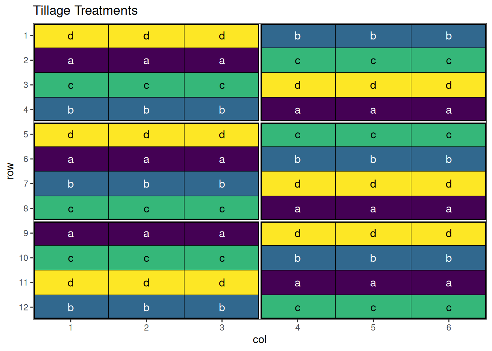
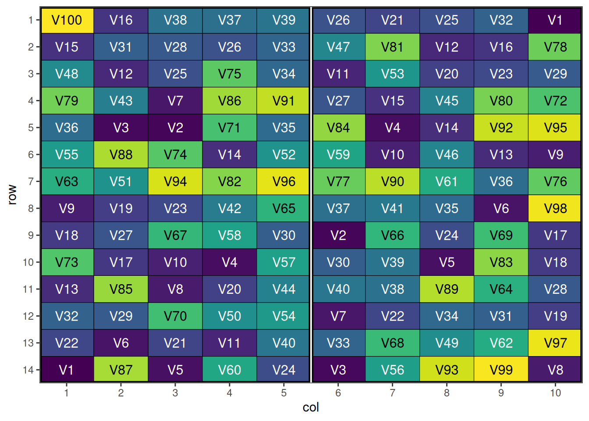

Complex Agricultural Experimental Designs with speed
2025-10-09
Source:vignettes/complex_designs.qmd
Introduction
This vignette covers advanced and complex experimental designs that are used in specialised agricultural research contexts. These designs are particularly useful for plant breeding programs, large-scale variety trials, and situations where standard complete block designs are impractical due to resource constraints or the nature of the treatments.
Building on the foundational designs covered in the Common Agricultural Experimental Designs vignette, these complex designs offer solutions for challenging experimental scenarios while maintaining statistical rigour through spatial optimisation with the speed package.
Split-Split Plot Designs
Overview
Split-split plot designs extend the hierarchical structure of split-plot designs to accommodate three factors with different levels of experimental difficulty or practical constraints. This creates a three-level hierarchy of experimental units.
Hierarchical Structure
Whole Plots (Main Plots)
- Largest experimental units
- Factor A applied to whole plots
- Most difficult factor to randomise
- Example: Tillage systems, irrigation methods
Sub-Plots (Split Plots)
- Intermediate-sized units within whole plots
- Factor B applied to sub-plots
- Moderate randomisation difficulty
- Example: Fertilizer treatments, planting dates
Sub-Sub-Plots (Split-Split Plots)
- Smallest experimental units
- Factor C applied to sub-sub-plots
- Easiest factor to randomise
- Example: Varieties, pesticide treatments
Error Structure
Complex error structure with multiple error terms:
- Whole plot error for Factor A effects
-
Sub-plot error for Factor B and A×B effects
- Sub-sub-plot error for Factor C and higher-order interactions
When to Use Split-Split Plot Designs
- Three factors with different application constraints
- Hierarchical treatment structure matches practical needs
- Sequential application of treatments over time
- Resource or equipment limitations for some factors
Examples of Applications
Agricultural Examples
- Tillage × Fertilizer × Variety experiments
- Irrigation × Planting Date × Cultivar studies
- Cover Crop × Nitrogen × Hybrid trials
Industrial Examples
- Temperature × Pressure × Catalyst process studies
- Machine × Operator × Material quality experiments
Example: Split-Split Plot Design for Agricultural Systems Research
Consider a complex agricultural trial examining Tillage System × Nitrogen Rate × Variety interactions with three hierarchical levels.
Setting Up Split-Split Plot Designs with speed
split_split_df <- data.frame(
row = rep(1:16, each = 9),
col = rep(1:9, times = 16),
block = rep(1:4, each = 36),
# Fixed wholeplot assignment: 3 wholeplots per block, each 4×3
wholeplot = rep(rep(1:3, each = 3), times = 16) + rep(0:3 * 3, each = 36),
wholeplot_treatment = rep(rep(LETTERS[1:3], each = 3), times = 16),
subplot = rep(1:48, each = 3),
subplot_treatment = rep(rep(letters[1:4], each = 9), times = 4),
subsubplot_treatment = rep(c("x", "y", "z"), 48)
)
This shows the initial split-split plot design with three-level hierarchical structure.
Performing the Optimisation
result_ss <- speed(split_split_df,
swap = list(wp = "wholeplot_treatment",
sp = "subplot_treatment",
ssp = "subsubplot_treatment"),
swap_within = list(wp = "block",
sp = "wholeplot",
ssp = "subplot"),
iterations = list(wp = 2000,
sp = 5000,
ssp = 20000),
early_stop_iterations = list(wp = 1000,
sp = 3000,
ssp = 5000),
swap_all = TRUE,
seed = 42)row and col are used as row and column, respectively.Optimising level: wp
Level: wp Iteration: 1000 Score: 252 Best: 252 Since Improvement: 972
Early stopping at iteration 1028 for level wp
Optimising level: sp
Level: sp Iteration: 1000 Score: 132 Best: 132 Since Improvement: 594
Level: sp Iteration: 2000 Score: 132 Best: 132 Since Improvement: 1594
Level: sp Iteration: 3000 Score: 132 Best: 132 Since Improvement: 2594
Early stopping at iteration 3406 for level sp
Optimising level: ssp
Level: ssp Iteration: 1000 Score: 12 Best: 12 Since Improvement: 46
Level: ssp Iteration: 2000 Score: 10 Best: 10 Since Improvement: 617
Level: ssp Iteration: 3000 Score: 9 Best: 9 Since Improvement: 346
Level: ssp Iteration: 4000 Score: 9 Best: 9 Since Improvement: 1346
Level: ssp Iteration: 5000 Score: 9 Best: 9 Since Improvement: 2346
Level: ssp Iteration: 6000 Score: 9 Best: 9 Since Improvement: 3346
Level: ssp Iteration: 7000 Score: 9 Best: 9 Since Improvement: 4346
Early stopping at iteration 7654 for level ssp Output of the Optimisation
result_ssOptimised Experimental Design
----------------------------
Score: 393
Iterations Run: 12091
Stopped Early: TRUE TRUE TRUE
Treatments:
wp: A, B, C
sp: a, b, c, d
ssp: x, y, z
Seed: 42 Visualise the Output
res1 <- autoplot(result_ss, treatments = "wholeplot_treatment") + ggplot2::labs(title = "Whole plot Treatments")
res2 <- autoplot(result_ss, treatments = "subplot_treatment") + ggplot2::labs(title = "Sub-plot Treatments")
res3 <- autoplot(result_ss, treatments = "subsubplot_treatment") + ggplot2::labs(title = "Sub-sub-plot Treatments")
res1 + res2 + res3 +
plot_layout(ncol = 2) +
plot_annotation(title = "Optimised Split-Split Plot Design")Above is the final output of this design. Note that there are some adjacent pairs of treatments in the sub-sub-plots. This is quite difficult to avoid in these situations, however adjusting some of the optimisation parameters may help with this. For further information, see the vignette about changing optimisation parameters for speed.
Strip-Plot Designs
Overview
Strip-plot designs are extensions of split-plot designs used when both treatment factors are difficult to apply to small areas. Treatments are arranged in strips that cross each other, creating a grid pattern where intersections represent treatment combinations.
Structure
- Horizontal strips for one factor (e.g., tillage methods)
- Vertical strips for another factor (e.g., planting dates)
- Intersections represent factor combinations
- Whole plots larger than traditional split-plot designs
When to Use Strip-Plot Designs
- Both factors require large application areas
- Machinery constraints for both factors
- Irrigation × cultivation experiments
- Planting date × row spacing studies
- When split-plot hierarchy doesn’t fit the practical situation
Advantages and Limitations
Advantages
- Accommodates two “difficult-to-randomise” factors
- More flexible than split-plot for certain applications
- Maintains reasonable precision for main effects
- Practical for mechanised agriculture
Limitations
- Lower precision for interaction effects
- Complex analysis with multiple error terms
- Less efficient than RCBD for most comparisons
- Requires larger field areas
Example: Strip-Plot Design for Tillage × Planting Date
Consider an experiment testing 3 tillage methods and 4 planting dates where both factors require large application areas.
Setting Up Strip-Plot Designs with speed
df_strip <- data.frame(
row = rep(1:12, each = 6), # 12 rows total (4 rows per block x 6 blocks)
col = rep(1:6, times = 12), # 6 columns
block = rep(rep(1:2, each = 3), times = 4) + rep(0:2*2, each = 24), # 6 blocks, 12 plots each
# Horizontal strips (3 levels, applied to rows within each block)
vertical_treatment = rep(rep(LETTERS[1:3], times = 2), times = 12), # A, B, C
# Vertical strips (4 levels, applied to columns within each block)
horizontal_treatment = rep(rep(letters[1:4], each = 6), times = 3), # a, b, c, d
# Plot identifier within each block
plot_in_block = rep(1:12, times = 6)
)This shows the initial strip-plot layout with horizontal and vertical strips before optimisation.
Performing the Optimisation
strip_result <- speed(df_strip,
swap = list(ht = "horizontal_treatment", vt = "vertical_treatment"),
swap_within = list(ht = "block", vt = "block"),
swap_all = TRUE)row and col are used as row and column, respectively.Optimising level: ht
Level: ht Iteration: 1000 Score: 84 Best: 84 Since Improvement: 875
Level: ht Iteration: 2000 Score: 84 Best: 84 Since Improvement: 1875
Early stopping at iteration 2125 for level ht
Optimising level: vt
Level: vt Iteration: 1000 Score: 54 Best: 54 Since Improvement: 840
Level: vt Iteration: 2000 Score: 54 Best: 54 Since Improvement: 1840
Early stopping at iteration 2160 for level vt Output of the Optimisation
strip_resultOptimised Experimental Design
----------------------------
Score: 138
Iterations Run: 4287
Stopped Early: TRUE TRUE
Treatments:
ht: a, b, c, d
vt: A, B, C
Seed: -745752008 Visualise the Output
autoplot(strip_result, treatments = "horizontal_treatment") + ggplot2::labs(title = "Tillage Treatments")
autoplot(strip_result, treatments = "vertical_treatment") + ggplot2::labs(title = "Planting Date Treatments")An optimised strip-plot design with well-arranged treatment combinations!
Incomplete Block Designs
Overview
When the number of treatments is large, complete blocks may be impractical due to field size or resource constraints. Incomplete block designs use smaller blocks where not all treatments appear in each block, while still maintaining good statistical properties.
Types of Incomplete Block Designs
Balanced Incomplete Block Design (BIBD)
The most restrictive but statistically optimal incomplete block design.
Characteristics:
- Each treatment appears in exactly blocks
- Each block contains exactly treatments
- Each pair of treatments appears together in exactly blocks
- Perfect balance but limited parameter combinations
Parameters:
- = number of treatments
-
= number of blocks
- = number of blocks containing each treatment
- = number of treatments per block
- = number of blocks containing each pair of treatments
- and
What may become apparent from the characteristics and parameters listed above is that these designs are not trivial, and there are specific and limited combinations that will work. In the case of speed, a custom objective function is required to ensure that each pair of treatments appear the same number of times. For an example and further discussion, see the vignette on custom objective functions.
Resolvable Incomplete Block Design (RIBD)
More flexible incomplete block designs where blocks can be grouped into complete replications.
Characteristics:
- Blocks can be organised into complete replications
- Each replication contains every treatment exactly once
- More flexible parameter combinations than BIBD
- Excellent for multi-location trials
Partially Balanced Incomplete Block Design (PBIBD)
Relaxes the balance requirements of BIBD while maintaining good statistical properties.
When to Use Incomplete Block Designs
- Large number of treatments (typically >15-20)
- Limited block size due to field homogeneity constraints
- Multi-location variety trials where shipping costs limit replication
- Resource limitations preventing complete replication
- Preliminary screening of large treatment sets
Example: Resolvable Incomplete Block Design for 6 Varieties
Consider a trial with 15 treatments where complete blocks would be too large for field homogeneity. We’ll use an incomplete block design with blocks of size 5.
Setting Up a Resolvable Incomplete Block Design with speed
Firstly we need to create a data frame representing the incomplete block design. Here we will use a systematic approach to generate the blocks and treatment combinations.
# Create the data frame
ribd_df <- data.frame(
row = rep(1:3, 6), # Row within each block
col = rep(1:6, each = 3), # Column corresponds to block
replicate = rep(1:3, each = 6), # 3 replicates, 6 observations each
block = rep(1:6, each = 3), # 6 blocks total, 3 treatments per block
treatment = paste0("V", rep(1:6, times = 3)) # Treatment assignments
)
# View the design
head(ribd_df) row col replicate block treatment
1 1 1 1 1 V1
2 2 1 1 1 V2
3 3 1 1 1 V3
4 1 2 1 2 V4
5 2 2 1 2 V5
6 3 2 1 2 V6
Figure 4 shows the systematic resolvable incomplete block layout before optimisation. Note that replicates are made of two blocks, in each of which half the treatments will appear, and replicates are made up of pairs of blocks. The treatments can be swapped between blocks, but need to remain within their replicate.
Performing the Optimisation
ribd_result <- speed(ribd_df,
swap = "treatment",
swap_within = "replicate",
seed = 42) row and col are used as row and column, respectively.Optimising level: single treatment within replicate
Level: single treatment within replicate Iteration: 1000 Score: 1.8 Best: 1.8 Since Improvement: 527
Level: single treatment within replicate Iteration: 2000 Score: 1.8 Best: 1.8 Since Improvement: 1527
Early stopping at iteration 2473 for level single treatment within replicate Output of the Optimisation
ribd_resultOptimised Experimental Design
----------------------------
Score: 1.8
Iterations Run: 2474
Stopped Early: TRUE
Treatments: V1, V2, V3, V4, V5, V6
Seed: 42
str(ribd_result)List of 8
$ design_df :Classes 'design' and 'data.frame': 18 obs. of 5 variables:
..$ row : int [1:18] 1 1 1 1 1 1 2 2 2 2 ...
..$ col : int [1:18] 1 2 3 4 5 6 1 2 3 4 ...
..$ replicate: int [1:18] 1 1 2 2 3 3 1 1 2 2 ...
..$ block : int [1:18] 1 2 3 4 5 6 1 2 3 4 ...
..$ treatment: chr [1:18] "V3" "V2" "V1" "V4" ...
$ score : num 1.8
$ scores : num [1:2474] 9 7.4 5.8 6.8 5.4 4.6 4.2 4.2 4.2 4.2 ...
$ temperatures : num [1:2474] 100 99 98 97 96.1 ...
$ iterations_run: num 2474
$ stopped_early : logi TRUE
$ treatments : chr [1:6] "V1" "V2" "V3" "V4" ...
$ seed : num 42
- attr(*, "class")= chr [1:2] "design" "list"Visualise the Output
autoplot(ribd_result)We see that each block by itself only contains half the treatments, but when combined, the pairs have a full replicate. The algorithm has also spatially optimised the treatments across rows and columns, giving a nicely optimised resolvable incomplete block design.
P-Rep (Partially Replicated) Designs
Overview
P-rep designs are a modern approach to plant breeding trials where a subset of entries (typically checks and selected test lines) are replicated while the majority of test entries appear only once. This provides a balance between statistical power and resource efficiency.
Structure
- Replicated entries: Key checks and promising lines (typically 20-25% of entries)
- Unreplicated entries: Majority of test lines (75-80% of entries)
- Strategic replication: Based on breeding program priorities
- Spatial distribution: Replicates spread throughout the trial
Key Features
Flexible Replication
- Variable replication levels based on entry importance
- Adaptive strategies for different breeding stages
- Resource-efficient compared to full replication
Modern Analysis Methods
- Mixed models with spatial correlation
- BLUP prediction for unreplicated entries
- Genomic information integration possible
- Spatial adjustment for field variation
When to Use P-Rep Designs
- Large-scale breeding trials (>500 entries)
- Early generation testing with limited seed
- Resource-constrained breeding programs
- High-throughput phenotyping applications
- When full replication is impractical
Example: P-Rep Design for Large Breeding Trial
Consider a breeding trial with 140 entries where 40 key entries (checks and promising lines) are replicated twice while others appear once. This is a single site design with two blocks.
Setting Up P-Rep Designs with speed
prep_design <- data.frame(
row = rep(1:14, each = 10),
col = rep(1:10, times = 14),
block = rep(rep(1:2, each = 5), 14),
entry = c(paste0("V", rep(1:40, 2)), paste0("V", 41:100)) # 100 varieties, 40 duplicated
)
# Create an indicator for the duplicated entries
prep_design$duplicated <- duplicated(prep_design$entry) | duplicated(prep_design$entry, fromLast = TRUE)
head(prep_design) row col block entry duplicated
1 1 1 1 V1 TRUE
2 1 2 1 V2 TRUE
3 1 3 1 V3 TRUE
4 1 4 1 V4 TRUE
5 1 5 1 V5 TRUE
6 1 6 2 V6 TRUEThis shows the initial p-rep design with duplicated entries distributed systematically. Once we have set up the data frame, the speed() optimisation call is quite straight-forward. Note that we have added block into the spatial_factors argument, to attempt to balance the replicated treatments between blocks as well. Typically with larger designs, we may also want to increase the number of iterations and early_stop_iterations to allow more swapping to take place, however in this case it is not necessary due to the low replication.
Performing the Optimisation
prep_result <- speed(prep_design,
swap = "entry",
spatial_factors = ~ block + row + col,
seed = 42)row and col are used as row and column, respectively.Optimising level: single entry within whole design
Level: single entry within whole design Iteration: 1000 Score: 2.993939 Best: 2.993939 Since Improvement: 5
Level: single entry within whole design Iteration: 2000 Score: 2.913131 Best: 2.913131 Since Improvement: 818
Level: single entry within whole design Iteration: 3000 Score: 2.913131 Best: 2.913131 Since Improvement: 1818
Early stopping at iteration 3182 for level single entry within whole design Output of the Optimisation
prep_resultOptimised Experimental Design
----------------------------
Score: 2.913131
Iterations Run: 3183
Stopped Early: TRUE
Treatments: V1, V2, V3, V4, V5, V6, V7, V8, V9, V10, V11, V12, V13, V14, V15, V16, V17, V18, V19, V20, V21, V22, V23, V24, V25, V26, V27, V28, V29, V30, V31, V32, V33, V34, V35, V36, V37, V38, V39, V40, V41, V42, V43, V44, V45, V46, V47, V48, V49, V50, V51, V52, V53, V54, V55, V56, V57, V58, V59, V60, V61, V62, V63, V64, V65, V66, V67, V68, V69, V70, V71, V72, V73, V74, V75, V76, V77, V78, V79, V80, V81, V82, V83, V84, V85, V86, V87, V88, V89, V90, V91, V92, V93, V94, V95, V96, V97, V98, V99, V100
Seed: 42
str(prep_result)List of 8
$ design_df :Classes 'design' and 'data.frame': 140 obs. of 5 variables:
..$ row : int [1:140] 1 1 1 1 1 1 1 1 1 1 ...
..$ col : int [1:140] 1 2 3 4 5 6 7 8 9 10 ...
..$ block : int [1:140] 1 1 1 1 1 2 2 2 2 2 ...
..$ entry : chr [1:140] "V100" "V16" "V38" "V37" ...
..$ duplicated: logi [1:140] TRUE TRUE TRUE TRUE TRUE TRUE ...
$ score : num 2.91
$ scores : num [1:3183] 4.53 4.49 4.45 4.37 4.37 ...
$ temperatures : num [1:3183] 100 99 98 97 96.1 ...
$ iterations_run: num 3183
$ stopped_early : logi TRUE
$ treatments : chr [1:100] "V1" "V2" "V3" "V4" ...
$ seed : num 42
- attr(*, "class")= chr [1:2] "design" "list"Ideally here we would also like to see an even distribution of the duplicated entries between each block.
prep_result$design_df$duplicated <- duplicated(prep_result$design_df$entry) | duplicated(prep_result$design_df$entry, fromLast = TRUE)
sum(prep_result$design_df$duplicated[prep_result$design_df$block==1])[1] 40
any(duplicated(prep_result$design_df$entry[prep_result$design_df$block==1]))[1] FALSEWith 40 duplicated varieties in this block, we know we also have 40 in the other block.
Visualise the Output
autoplot(prep_result, treatments = "entry")
An optimised p-rep design with strategic replication and spatial distribution. Note that because the treatments column is not called “treatment”, we need to specify the treatments argument in the autoplot() function.
Row-Column Designs with Blocking
Overview
Advanced row-column designs incorporate additional blocking structures to control for multiple sources of variation simultaneously. These designs are particularly useful for large, complex experiments where variation occurs in multiple dimensions.
Types of Row-Column Blocking
Row-Column Designs with Superblocks
- Superblocks contain multiple row-column units
- Hierarchical structure with blocks within blocks
- Multi-level variation control
- Suitable for very large experiments
Resolvable Row-Column Designs
- Complete replications within the row-column structure
- Replications as additional blocking factor
- Multiple complete layouts
- Good for multi-location or multi-season trials
Nested Row-Column Designs
- Plots nested within row-column intersections
- Sub-sampling within main experimental units
- Multiple measurements per treatment combination
- Increased precision for specific comparisons
Applications
- Multi-location breeding trials with spatial control
- Large greenhouse experiments with multiple environmental gradients
- Field trials with complex spatial patterns
- High-throughput phenotyping platforms
Example: Row-Column Design with Blocking in Two Dimensions
Consider a large field trial with 40 varieties each replicated 10 times, requiring both row blocks and column blocks.
Setting Up Row-Column Designs with Blocking
blocking_2d_design <- data.frame(row = rep(1:20, each = 20),
col = rep(1:20, 20),
treatment = rep(paste("V", 1:40, sep = ""), 10),
rowBlock = rep(1:10, each = 40),
colBlock = rep(rep(1:10, each = 2), 20))
head(blocking_2d_design) row col treatment rowBlock colBlock
1 1 1 V1 1 1
2 1 2 V2 1 1
3 1 3 V3 1 2
4 1 4 V4 1 2
5 1 5 V5 1 3
6 1 6 V6 1 3

This shows the initial row-column design with hierarchical blocking structure.
Performing the Optimisation
Now we will use the speed() function to optimise this design. We will swap treatments within row blocks, while also considering column blocks as a spatial factor. Note that we also set some optimisation parameters to allow for more swaps, as this is a larger design with more treatments.
Output of the Optimisation
blocking_2d_resultOptimised Experimental Design
----------------------------
Score: 0
Iterations Run: 39972
Stopped Early: TRUE
Treatments: V1, V2, V3, V4, V5, V6, V7, V8, V9, V10, V11, V12, V13, V14, V15, V16, V17, V18, V19, V20, V21, V22, V23, V24, V25, V26, V27, V28, V29, V30, V31, V32, V33, V34, V35, V36, V37, V38, V39, V40
Seed: 42 Visualise the Output

An optimised row-column design with blocking in two directions.
Conclusion
Complex experimental designs offer powerful solutions for challenging agricultural research scenarios. The speed package provides essential tools for optimising these designs spatially, ensuring that the statistical advantages of sophisticated designs are fully realised in practice.
Key benefits of using complex designs with spatial optimisation include:
- Efficient resource utilisation for large-scale studies
-
Maintained statistical rigor despite practical constraints
- Enhanced precision through appropriate blocking and spatial arrangement
- Flexible solutions for diverse research objectives
- Practical feasibility through optimised field layouts
When selecting and implementing complex designs, researchers should carefully balance statistical efficiency, practical constraints, and research objectives. The spatial optimisation capabilities of speed ensure that these sophisticated designs achieve their full potential in real-world applications.
Further Reading
Specialised Design References
- Cochran, W.G. & Cox, G.M. (1957). Experimental Designs
- John, J.A. & Williams, E.R. (1995). Cyclic and Computer Generated Designs
- Bailey, R.A. (2008). Design of Comparative Experiments
- Patterson, H.D. & Williams, E.R. (1976). “A new class of resolvable incomplete block designs”
Agricultural Applications
- Kempton, R.A. & Fox, P.N. (1997). Statistical Methods for Plant Variety Evaluation
- Singh, R. & Chaudhary, B.D. (1985). Biometrical Methods in Quantitative Genetic Analysis
Related Vignettes
- Common Agricultural Experimental Designs with speed - Foundational designs for most agricultural applications
This vignette demonstrates advanced applications of the speed package for complex experimental designs. For foundational designs, see the “Common Agricultural Experimental Designs” vignette. For specific implementation details, consult the package documentation and function help files.